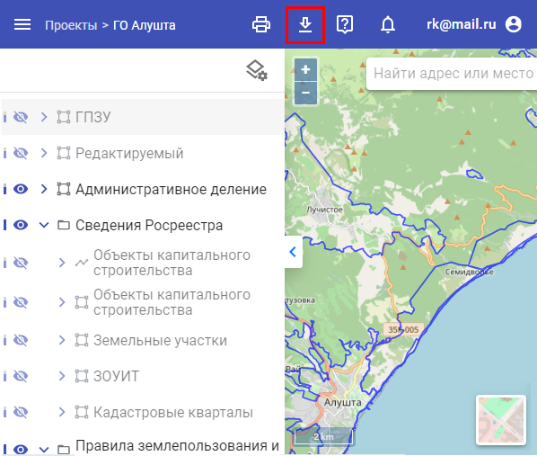
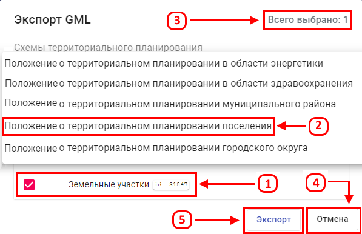
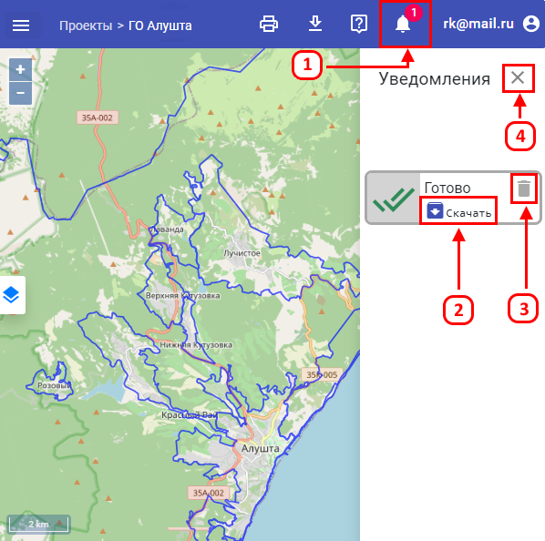

Для выгрузки GML необходимо:
-
Нажать на кнопку “Выгрузка GML”.

-
Выбрать слои (1) и Схемы территориального планирования (2). Количество выбранных слоев отображается в правом верхнем углу (3).
Для отмены экспорта GML нужно воспользоваться кнопкой “Отмена” (4), для его осуществления - кнопкой “Экспорт” (5).

-
Для того, чтобы скачать GML, необходимо нажать на кнопку “Уведомления” (1). В появившейся вкладке отображаются все скачанные файлы.
Для того, чтобы загрузить один из них, следует нажать на кнопку “Скачать” (2), убрать из вкладки - “Корзина” (3).
Для закрытия окна “Уведомления” нажмите на “Крестик” (4).
